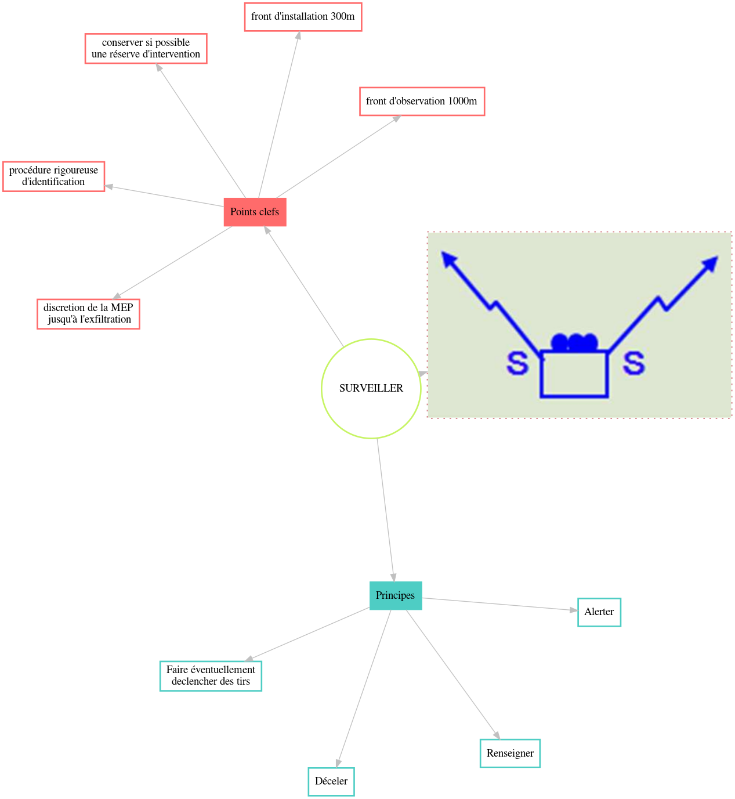

Surveiller
Définition
Mission consistant dans l'observation systématique des surfaces terrestres, des lieux, des personnes ou des objets, à l'aide de moyens spécifiques ou non, dans le but de déceler toute activité ennemie, hostile ou particulière, en un point, sur une direction ou dans une zone donnée, afin d'alerter et de renseigner.
Principes et points clefs
